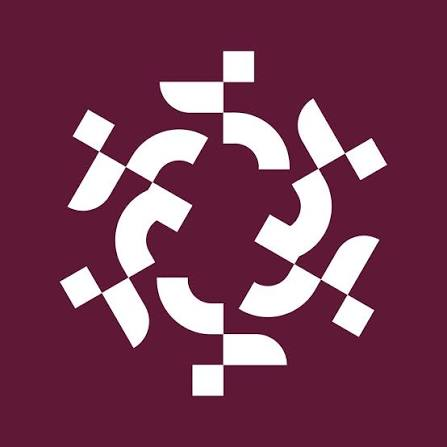
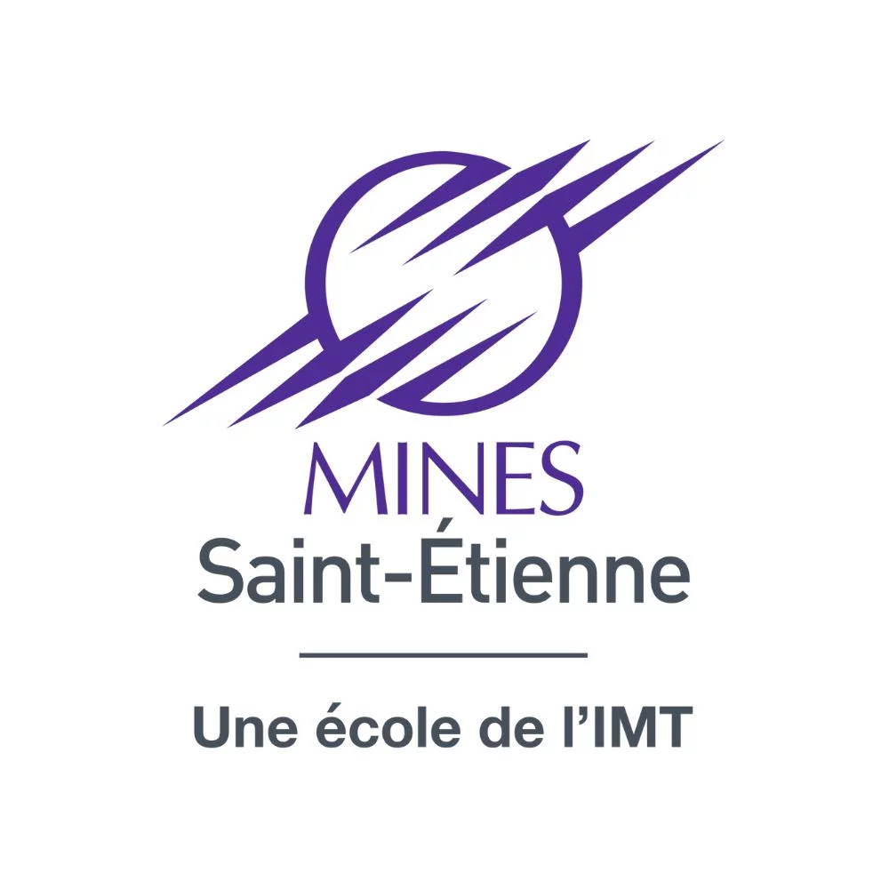
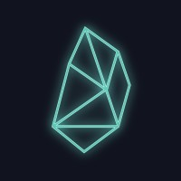
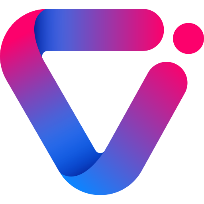
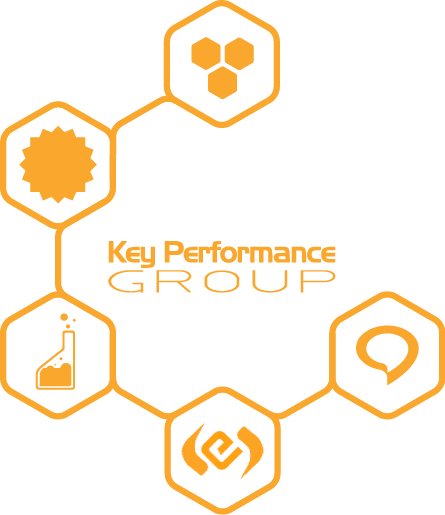
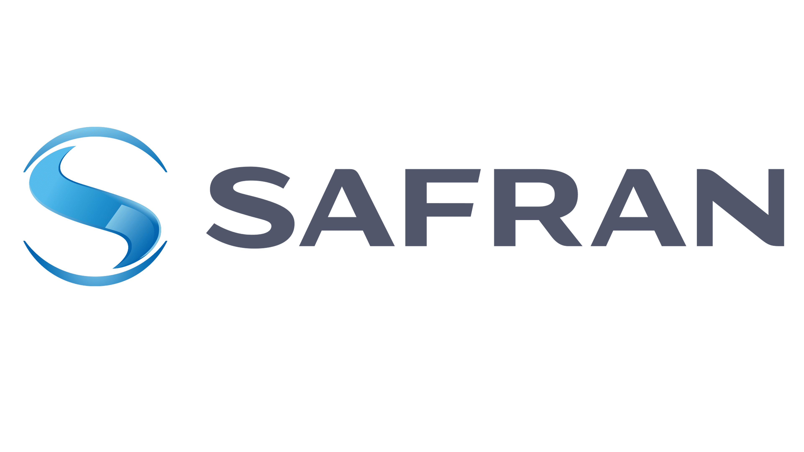
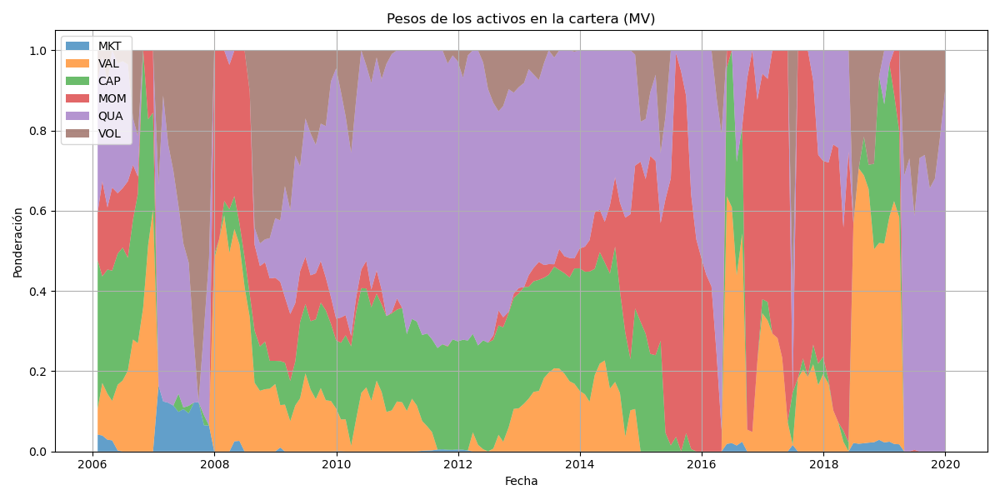
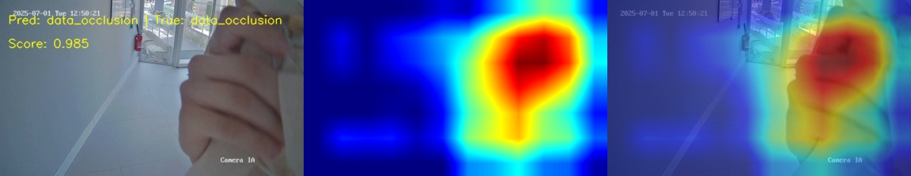
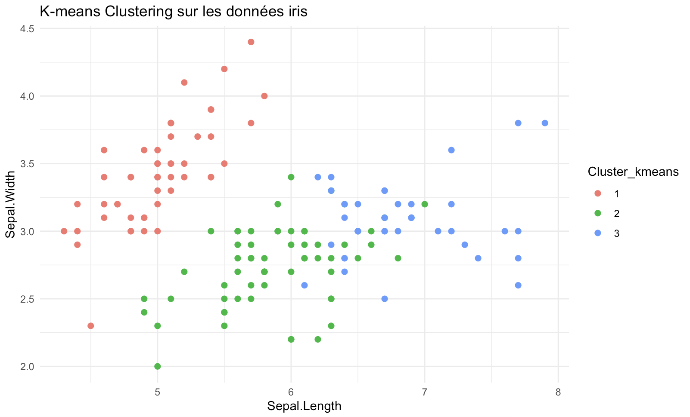
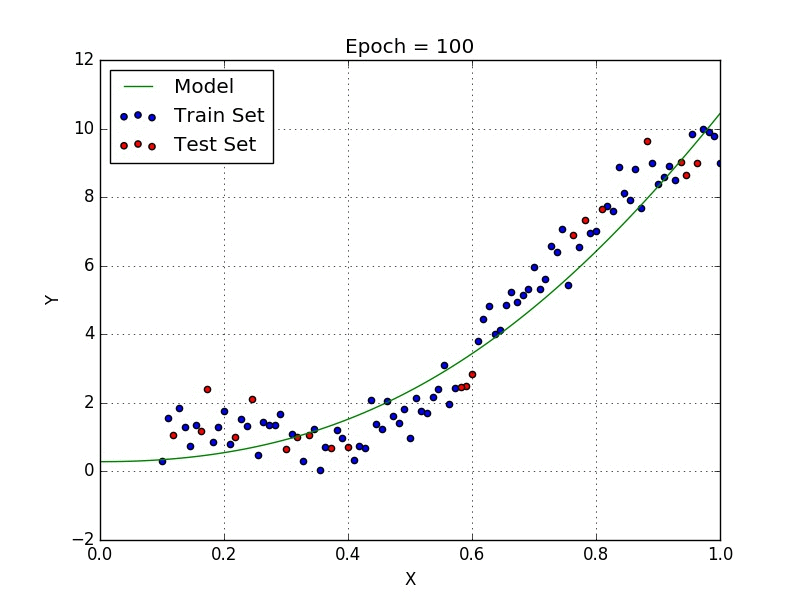

Issu d'un parcours en classes préparatoires scientifiques, je fais le pont entre la Data Science (IA, Machine Learning, Deep Learning) et la Finance de Marché. Actuellement Quantitative Analyst chez Silex Investment Partners, je conçois et calibre des scénarios de stress-test sur des produits structurés, j'analyse les fluctuations de marché via la décomposition des grecques, et j'optimise des structures autocall grâce à l'analyse de corrélation et de dispersion de volatilité. Cette expérience me permet de conjuguer rigueur technique et compréhension approfondie des dérivés et des stratégies cross-asset.
Mon parcours académique et professionnel m'a naturellement orienté vers l'intelligence artificielle et l'analyse quantitative. Du développement de modèles de deep learning pour la détection d'anomalies chez Videtics à mon travail actuel sur les surfaces de volatilité implicite et la structuration, je m'efforce de transformer la donnée complexe en un levier stratégique pour la prise de décision et l'ingénierie financière.
Au-delà de la data et de l'IA, je suis photographe indépendant et passionné de sport. Qu'il s'agisse d'atteindre un handicap 0 au golf ou de boucler un marathon en 3h38, je m'épanouis dans les défis qui exigent précision, créativité et endurance — des valeurs que j'investis dans chaque projet professionnel.
Compétences développées
En dehors de mes études
4L Trophy 2024 — Chef de Projet
Rallye-raid étudiant à vocation humanitaire au Maroc : plus de 15 000 € récoltés via sponsors et campagnes de financement (recherche de sponsors, gestion budgétaire, communication).
Association Declic Photographie — Responsable Formation
Emlyon Business School : organisation d'ateliers pédagogiques pour améliorer les compétences des photographes et garantir la qualité de plus de 450 événements annuels.
Bénévolat
Association Café 1000 Vies : A aidé à accueillir les membres et à coordonner des événements communautaires, favorisant une atmosphère accueillante et inclusive.
Photographe Indépendant
Photographe passionné devenu professionnel, expérimenté dans les festivals, mariages, voyages et concerts — alliant créativité et précision pour offrir des résultats de haute qualité.

EDHEC Business School
2026 – 2027 · Nice, France
MSc en Ingénierie Financière – #5 mondial des Masters en Finance (Financial Times)
Cours fondamentaux :
- Produits dérivés avancés
- Produits dérivés actions
- Finance en temps continu
- Taux et crédit avancés
- Gestion de portefeuille quantitative
- Arbitrage statistique avancé
- Méthodes empiriques en finance
- Machine Learning

École National des Mines de Saint-Étienne
2022 – 2026 · Saint-Étienne, France
Master en sciences et ingénierie exécutive - Ingénieur Civil des Mines (ICM)
Cours fondamentaux :
- Science des données
- Machine learning
- Metamodeling & optimization
- Statistiques
- Probabilités
- Intelligence artificielle
- Recherche opérationnelle
- Code
- Mathématique appliquées
EM Lyon Business School
2022 – 2026 · Lyon, France
Master en Management – Programme Grande Ecole
Cours fondamentaux :
- Management stratégique
- Python and Algorithmes pour la Finance
- Management de projet
- Analyse financière des mouvements stratégiques
- Comportement organisationnel et leadership
- Fondamentaux de la finance d'entreprise
- Bases de la comptabilité
Échange universitaire — Universidad de Chile
- Big Data et Data Mining
- Investissements financiers
- Management des Organisations
- Analyse Qualitative et Traitement Automatique du Langage Naturel (TALN/NLP)

- Conception et calibration de scénarios de stress-test (chocs sur spots, surfaces de volatilité et matrices de corrélation) pour évaluer la résilience des produits structurés. Analyse quantitative des variations de prix de marché via la décomposition des Grecs sous LexiFi.
- Identification des facteurs de marché exogènes (ajustements de spreads émetteurs, lissage de marge) et analyse résiduelle de valorisation.
- Développement d'une méthodologie d'extraction et d'implicitation de nappes de volatilité via LexiFi. Mise en place d'une infrastructure de stockage de données de marché pour le backtesting des modèles de pricing.

- Développement d’un modèle de deep learning pour la classification automatique de l’état des caméras (flou, obstruction, problèmes d’éclairage), à partir d’un jeu de données de plusieurs milliers d’images combiné à des flux vidéo de surveillance en temps réel.
- Conception et mise en œuvre d’un pipeline complet d’entraînement sous PyTorch, incluant l’augmentation de données, l’architecture du modèle, des fonctions de perte personnalisées, des métriques d’évaluation et Grad-CAM pour l’explicabilité.
- Collaboration avec l’équipe IA pour optimiser les performances du modèle et intégrer la solution en environnement de production pour plusieurs dizaines de clients.
- Rédaction d’une documentation complète du projet pour le transfert à l’équipe R&D.

- Gestion de processus à grande échelle, garantissant des réponses de haute qualité et dans les délais aux appels d’offres pour des projets digitaux (4 appels d’offres remportés).
- Conception et mise en œuvre d’un pipeline complet d’entraînement sous PyTorch, incluant l’augmentation de données, l’architecture du modèle, des fonctions de perte personnalisées, des métriques d’évaluation et Grad-CAM pour l’explicabilité.
- Développement de relations clients solides grâce à une communication efficace et une compréhension approfondie des objectifs business.
- Encadrement d’équipes digitales, en créant des environnements haute performance et en contribuant à la création de stratégies publicitaires via des analyses quantitatives et des rapports.

- Participation à des initiatives de sobriété énergétique dans les processus de production et d’usinage, en analysant les données de consommation pour identifier des opportunités d’efficacité.
- Collecte et traitement de métriques opérationnelles pour appuyer la prise de décision dans le cadre de stratégies de réduction énergétique.
- Contribution à la mise en œuvre de recommandations basées sur les données pour optimiser l’utilisation des ressources et réduire l’impact environnemental.






Contact ⚡
Restons en contact et voyons comment la Data et l’IA peuvent façonner un monde plus intelligent et créatif.